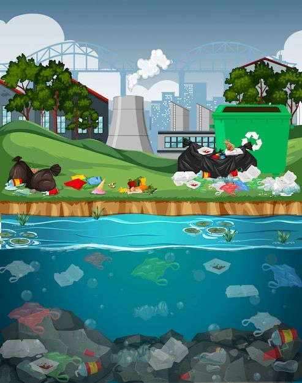
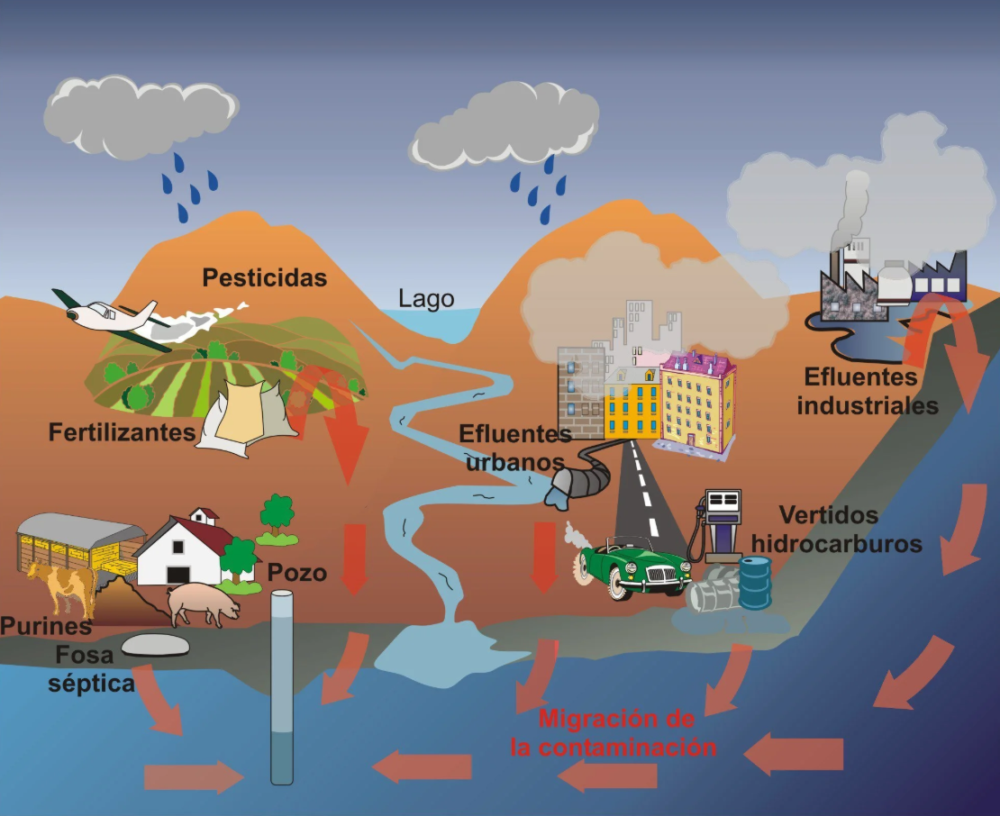
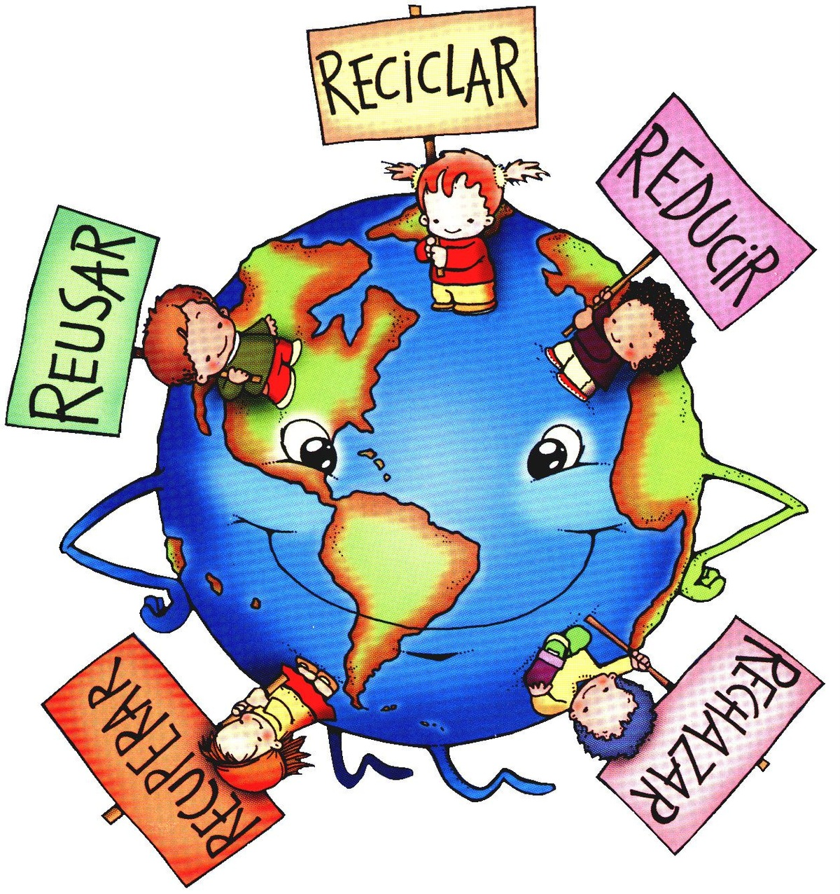

La contaminación ambiental se presenta en distintas formas, como la contaminación del aire, del agua y del suelo. La contaminación del aire es provocada principalmente por las emisiones de vehículos, fábricas y la quema de combustibles fósiles, afectando la salud respiratoria de las personas. Por otro lado, la contaminación del agua ocurre cuando desechos industriales, plásticos y sustancias químicas llegan a ríos, lagos y mares, dañando gravemente a los ecosistemas acuáticos. Asimismo, la contaminación del suelo se genera por la acumulación de basura y el uso excesivo de pesticidas, lo que reduce la fertilidad de la tierra y afecta la producción de alimentos.

Las consecuencias de la contaminación son cada vez más evidentes y preocupantes. El cambio climático, el aumento de enfermedades, la pérdida de biodiversidad y la escasez de recursos naturales son solo algunos de sus efectos. Muchas especies animales y vegetales están desapareciendo debido a la destrucción de sus hábitats, mientras que los seres humanos enfrentan problemas de salud como alergias, enfermedades respiratorias y contaminación del agua potable. Si no se toman medidas urgentes, estos problemas continuarán agravándose y afectarán la calidad de vida de las futuras generaciones.

Es momento de actuar y asumir nuestra responsabilidad con el planeta. Cada pequeña acción cuenta: reducir el uso de plásticos, reciclar, ahorrar agua y energía, y cuidar nuestros espacios naturales son pasos fundamentales hacia un cambio positivo. No esperemos a que el problema sea irreversible; juntos podemos marcar la diferencia. Hagamos conciencia, informemos a otros y adoptemos hábitos más sostenibles. El futuro del medio ambiente depende de todos nosotros, y el cambio comienza hoy.